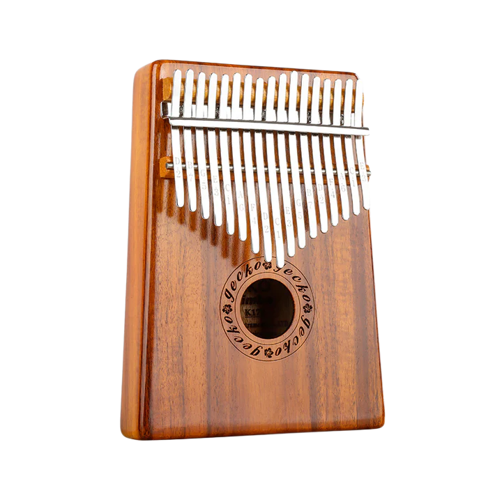

Kalimba, Sub-Saharan Africa, c 400 CE

The origins of the Kalimba stems from an instrument invented about 3,000 years ago in West Africa. Back then the keys were generally made of bamboo. Metal keys started appearing about 1,300 years ago and became quite popular across Africa, particularly for the Shona People in Zimbabwe. It was the Shona People who gave the traditional instrument the name ‘Mbira’. The Mbira is from the family of instruments known as lamellaphones, a member of the plucked idiophone family. There are many different types of Mbira and they are widely used in social gatherings and religious ceremonies. The Kalimba is a modernised version of the Mbira and was originally produced in the 1950’s by Englishman, High Tracey, who fell in love with African culture and music when he spent time in Rhodesia as a young man. We can thank Tracey for popularising the Kalimba outside of Africa.
click here to listen to me! click here to learn how to play me!